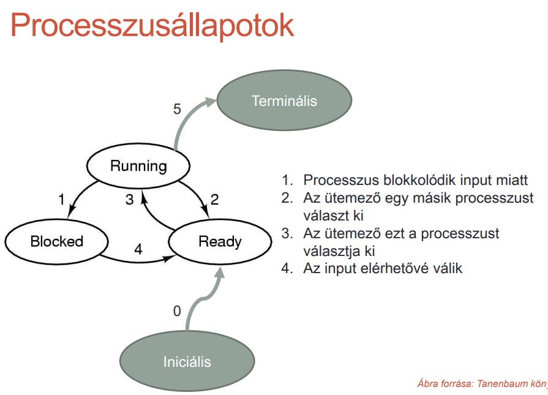

A végrehajtás alatt lévő program.
Szekvenciálisan végrehajtódó program
Egyidejűleg több processzus létezik: A processzor idejét meg kell osztani az egyidejűleg létező processzusok között: időosztás (time sharing)
Futó processzusok is létrehozhatnak processzusokat: Kooperatív folyamatok, egymással együttműködő, de amúgy független processzusok
Az erőforrásokat az OS-től kapják (centralizált erőforrás kezelés)
jogosultságokkal rendelkeznek
Előtérben és háttérben futó folyamatok
Processzusnak lehet címtartománya
Saját memória
Osztott memória
Processus állapotok:
Futáskész: készen áll a futásra, csak ideiglenesen le lett állítva, hogy egy másik processzus futhasson
Futó: a proc bitrokolja a CPU-t
Blokkolt: bizonyos külső esemény bekövetkezéséig nem képes futni
Iniciális
Terminális
Felfüggesztett
Önálló végrehajtási egységként működő program, objektum, szekvenciálisan végrehajtható utasítás-sorozat
A proc hozza létre (akár többet is egyszerre)
Osztozik a létrehozó proc erőforrásain
Van saját állapota, verme
Egy folyamaton belül több tevékenység végezhető párhuzamosan
Szálak megvalósítása:
A felhasználó kezeli a szálakat egy függvénykönyvtár segítségével. Ekkor a kernel (az operációs rendszer alapja (magja), amely felelős a hardver erőforrásainak kezeléséért) nem tud semmit a szálakról
A kernel kezeli a szálakat. Szálak létrehozása és megszüntetése kernelhívásokkal történik
A proc nyilvántartására, tulajdonságainak leírására szolgáló memóriaterület.
Processusonként egy egy bejegyzés - Processzus vezérlő blokk (PCB)
PCB tartalma:
azonosító: processzus id
processzus állapota
CPU állapota: a kontextus cseréhez
jogosultságok, prioritás
birtokolt erőforrások
Futó processzusok is létrehozhatnak processzusokat: Kooperatív folyamatok, egymással együttműködő, de amúgy független processzusok
Egyszerű esetekben megoldható, hogy minden processzus elérhető az OS elindulása után
Általános célú rendszerekben szükség van a processzusok létrehozására és megszüntetésére
Processzusokat létrehozó események:
Rendszer inicializálása
Felhasználó által kezdeményezett
Kötegelt feladat kezdeményezése
Az OS indulásakor sok processzus keletkezik:
Felhasználókkal tartják a kapcsolatot: Előtérben futnak
Nincsenek felhasználóhoz rendelve:
Saját feladatuk van
Háttérben futnak
Lépései:
Memóriaterület foglalása a PCB számára
PCB kitöltése iniciális adatokkal
Programszöveg, adatok, verem számára memóriafoglalás, betöltés
A PCB procok láncra fűzése, futáskész állapot. Ettől kezdve a proc osztozik a CPU-n.
Szabályos kilépés (exit(0)): önkéntes, végzett a feladatával
Kilépés hiba miatt
Kilépés végzetes hiba miatt: önkéntelen, illegális utasítás, nullával osztás
Egy másik proc megsemmisíti: önkéntelen, mésik proc kill() utasítására
Lépései:
Gyermek procok megszüntetése (rekurzívan)
PCB procok láncról való levétele, terminális állapot. Ettől kezdve a proc nem osztocik a CPU-n
Proc bitrokában lévő erőforrások felszabadítása (pl. fájlok lezárása)
A memóriatérképnek (konstansok, változók, dinamikus változók) megfelelő memóriaterület felszabadítása
PCB memóriaterületének felszabadítása
Kölcsönös kizárás: Ha egy processzus megosztott erőforrást, akkor a többi processzus tartózkodjon ettől.
Kettő vagy több processzus egy-egy szakasza nem lehet átfedő, mert ilyen ez a két szakas egymásra nézve kritikus szekciók ennek a megoldása az oprendszer feladata.
Egy CPU áll rendelkezésre. Processzusok versengenek a CPU-ért
Az OS dönti el, hogy melyik kapja meg a CPU-t
Az ütemező (scheduler) hozza meg a döntést Ütemezési algoritmus
Ütemezés
Feladata: Egy adott időpontban futáskész procok közül egy kiválasztása, amely a következőkben a CPU-t bitrokolni fogja
Mikor kell ütemezni?: amikor egy processus befejeződik vagy blokkolódik
Céljai:
a CPU legyen jól kihasznált
az átfutási idő (proc létrejöttétől megszűnéséig eltelt idő) legyen rövid
egységnyi idő alatt minél több proc teljesüljön
A manapság haszálatos op.rendszerek nem tartoznak a kötegelt rendszerek (: Előre meghatározott sorrend szerint végrehajtandó feladatok együttese.) világába, mégis érdemes röviden megemlíteni ezek ütemezési típusait.
Sorrendi ütemezés: (First-Come First-Served)
Futásra kész folyamatok egy várakozó sorban helyezkednek el.
A sorban levő első folyamatot hajtja végre a központi egység. Ha befejeződik a folyamat végrehajtása, az ütemező a sorban következő feladatot veszi elő.
Új feladatok a sor végére kerülnek
Ha az aktuálisan futó folyamat blokkolódik, akkor a sorban következő folyamat jön, míg a blokkolt folyamat, ha újra futásra kész lesz, akkor a sor végére kerül, és majd idővel újra rá kerül a vezérlés.
Legrövidebb feladat először: (Shortest Job First)
az a folyamat kerül először ütemezésre, melyiknek a legkisebb a futási ideje.
az alkalmazhatóság szempontjából nem ideális, ha nem tudjuk előre a folyamatok végrehajtási idejét.
Legrövidebb maradék futásidejű:
Ismerni kell a folyamatok futási idejét előre.
Amikor új folyamat érkezik, vagy a blokkolás miatt egy következő folyamathoz kerül a vezérlés, akkor nem a teljes folyamat végrehajtási idejét, hanem csak a hátralévő időt vizsgálja az ütemező, és amelyik folyamatnak legkisebb a maradék futási ideje, az kerül ütemezésre
Háromszintű futásidejű:
A feladatok a központi memóriában vannak, közülük egyet hajt végre a központi egység. Előfordulhat, hogy a többi feladat közül ki kell rakni egyet a háttértárba, mivel a működés során elfogyhat a memória.
Az a döntést, hogy a futásra jelentkező folyamatok milyen sorrendben kerüljenek be a memóriába, a bebocsátó ütemező hozza meg.
Round Robin
Az ütemező beállít egy időintervallumot egy időzítő segítségével és amikor az időzítő lejár megszakítást ad.
Megadott időközönként óramegszakítás következik be és ekkor az ütemező a következő folyamatnak adja a processzort.
A folyamatokat egy sorban tárolja a rendszer, és amikor lejárt az időszelet, akkor az a folyamat, amelyiktől az ütemező éppen elveszi a vezérlést, a sor végére kerül
Minden processzusnak egyforma fontosságot ad.
Prioritásos ütemezés
Felmerül az igény, hogy nem feltétlenül egyformán fontos minden egyes folyamat.
A folyamatokhoz egy fontossági mérőszámot, prioritást (prioritási osztályt) rendel hozzá
A legmagasabb prioritású futáskész processzus kapja meg a CPU-t
Alapvető szerepe van az időnek
Ha a feladatainknak nemcsak azt szabjuk meg, hogy hajtódjanak végre valamilyen korrekt ütemezés szerint, hanem az is egy kritérium, hogy egy adott kérést valamilyen időn belül ki kell szolgálni, akkor valós idejű op.rendszerről beszélünk.
A megfelelő határidők betartása úgy valósítható meg, hogy egy programot több folyamatra bontunk (ezek a folyamatok általában kiszámítható viselkedéssel rendelkeznek), és ezeknek a rövid folyamatoknak az ütemező biztosítja a számukra előírt határidő betartását
Szigorú valós idejű rendszer
a határidő betartása kötelező
Toleráns valós idejű (soft real-time) rendszer
a határidők kis mulasztása még elfogadható, tolerálható.
Több idejűleg létező processzusok - Egyetlen processzor: a CPU váltakozva hajtja végre a procok programjait.
Kontextus csere: A CPU átvált procról a procra.
állapotát a CPU regisztereiből menteni kell az erre a célra fenntartott memóriaterületre. (IP, SP)
korábban memóriába mentett állapotát helyre kell állítani a CPU regisztereiben